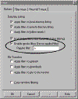

Table Of
Contents:
Where to upload your files:
Configuring your FTP clients:
Understanding the web site file system:
CGI Based Programs:
The ins and outs of DNS and how it effects your domain:
Setting up and managing Sub-Domains:
Setting up Domain Email:
Where to upload your files:
The Home
Directory:
Your html files, and or the files you want to make
accessible to the World Wide Web must be uploaded to your
account. When you first FTP into your account, you'll be
taken to your "Home" directory. Don't confuse this with
your "web directory." The home directory is "not"
accessible to the World Wide Web; it's a private directory
where critical system files reside. DO NOT delete files
that have been created by the system, otherwise your web
site may disappear into cyber oblivion!
The
public_html
and
www
directory - (Where web accessible files are placed)
These are the two directories, where
files you want accessed from the web must be placed. Open
the folder "public_html" , which is your "web accessible
directory." The folder named "www" is actually a shortcut
to public_html, (both of them take you to your web
directory). Upload the files you want accessible to your
visitors and feel free to make the appropriate
sub-directories you'll require.

Configuring FTP Clients:
Configuring
Cute FTP
Based on version 4.2
Please note that there are a number
of older and current versions of Cute FTP floating around.
As a result, some of the instructions provided here cannot
possibly reflect all the versions, which have been
released in the past 5 years. The only small difference
you may encounter is where some of the options can be
found (depending on the client version you're using). In
any event, everything is pretty well much the same. Let's
get started:
1. Open Cute FTP
2. Select "File"
3. Select "Site Manager"
4. Select "New"
Options you'll see:
- Label for site: Enter a name for
this account. For example, "My Root
Account."
- FTP Host Address: www.mydomain.com
- FTP Site Username: Your main
system login name
- FTP Site Password: Your main
system password
- FTP Site Connection: Port: 21
- Login Type: Normal
Notes
About Cute FTP:
There are a few advanced features you may want to be aware
of. These features may need to be enabled if you're having
problems accessing your site via an FTP client. The
following will explain:
Trouble accessing your site via FTP:
This can sometimes occur if your accessing the Internet
from behind a firewall, personal router, or using an
Internet connection sharing system such as NAT (Network
Address Translation). This is often a class case scenario
in a home or small office where several computers are
being shared by one Internet connection. Symptoms
include, difficulty logging in via FTP, and or maintaining
a reliable upload or download session.
Use Passive Mode instead:
From your FTP main interface, select:
1.
Edit
(from the main dropdown
menus)
2. Settings
A dialog box called "Settings" now appears. Select:
3. Connections
4. Firewall
This opens the Connection/Firewall dialog box:
5. Check the box that says "PASV
mode."
6. Click OK
Don't touch any of the other settings
Ignore all other settings
you see here except for the "PASV_mode" setting!
Give it a try and see how it works. If you're still having
problems, you should contact your ISP to see if they can
make the necessary changes required for you to access your
site via FTP. There are a vast number of network
configurations ISP's sometimes use, and some of which that
can cause problems for users wanting to access the web
beyond that of a browser.
How to view all files in
your account (For Advanced Users).
Advanced users may want ability to view "all hidden" files
in their directories. While most of these are critical
system files, there are a few, which can be manually
edited by "Advanced Users." This is done by inserting an
entry into the "File Masking" feature in the client.
Unmasking Hidden Files:
1. Open Cute FTP
2. Go to the site manager
3. Select your account
4. Select "Edit"
A dialog box opens called "Site
Properties":
1. Check the "Enable Filter" box
2. Click the "Filter" button
3. Check the " Enable Remote Filters
(Server Applied Filer) " box
4. In the "Remote Filter" window, type this command
-a
5. Click ok
That's it!

The -a command
will unmask "all" files in your web account.
Final
Note:
NEVER REMOVE OR ALTER FILES, WHICH HAVE BEEN CREATED BY
THE SERVER or C-Panel!! Unless you're an advanced user,
please leave all files that have been created by the
system alone! Doing otherwise could cause serious problems
with your account, and in some cases take it offline
completely. When in doubt "ASK", do not
Delete!
Setting Up WSFTP

Please note that there are a number
of older and current versions of WSFTP floating around. As
a result, some of the instructions provided here cannot
possibly reflect all the versions, which have been
released in the past 5 years. The only small difference
you may encounter is where some of the options can be
found (depending on the client version you're using). In
any event, everything is pretty well much the same.
Setting up WSFTP:
1. Open your WSFTP client
2. The dialog box "WS_FTP" Sites should display. If not,
click the "Connect" button.
3. Select "New"
You should see this dialog box:
You'll be
taken through these options:
1.
New Site/Folder: Choose a name for
this account

2.
Host Name or IP address:
www.yourdomain.com
3.
User ID: Main system login
4.
User Password: Main System Password
5.
Select
"Save Password."

6.
Select
"Finish."
Done! Your can now FTP into your site
Notes About
WSFTP:
Main Username and Password:
The main Username and Password was sent to you in your
welcoming email, and are also the same ones used to access
C-Panel. If you've changed your "main"
Username and Password before setting this
up, then use you must use them instead.
Trouble accessing your site
via FTP:
This can sometimes occur if your accessing the Internet
from behind a firewall, personal router, or using an
Internet connection sharing system such as NAT (Network
Address Translation). This is often a class case scenario
in a home or small office where several computers are
being shared by one Internet connection. Symptoms
include, difficulty logging in via FTP, and or maintaining
a reliable upload or download session. If this is the
case, try "Passive Mode."
Setting
Passive Mode:
1.
Open the WSFTP account manager
2.
Highlight your account
3.
Select "Properties"
4.
Select
the "Advanced" tab
5. Check the box called
"Passive Transfers."
6. Click "OK"
Select passive mode, click
"OK", and try it again.
How to
view all files in your account (For Advanced Users).
Advanced users may want ability to
view "all hidden" files in their directory. While most of
these are critical system files, there are a few, which
can be manually edited by "Advanced Users." This is done
by inserting an entry into the "File Masking" feature in
the client.
Unmasking Hidden Files:
1. Open the WSFTP account manager
2. Highlight your account
3. Select "Properties"
4. Select the "Startup" tab
5. In the "Remote File Mask"
window, enter -a
The -a command
will unmask all files in your web account.
Final Note:
NEVER REMOVE OR ALTER FILES, WHICH HAVE BEEN CREATED BY
THE SERVER or C-Panel!! Unless you're an advanced user,
please leave all files that have been created by the
system alone! Doing otherwise could cause serious problems
with your account, and in some cases take it offline
completely. When in doubt "ASK", do not
Delete!
Understanding the web site file system:
index.html
and why you should use it:
This again is where a number of
newer webmasters become stumped. They upload all of their
files and directories, and then want to access them with
their browser, but forgetting to create their welcoming
page as index.html, so here's what happens: They access
their site as
http://www.mydomain.com/ or using the associated IP
number, for example,
http://test.html/, and what they see is their entire
file directory structure! Yikes! It looks just like
exploring the C drive on your computer! You don't want
visitors seeing that, do you?
When you access your site by calling it as
http://www.mydomain.com
or
the assigned IP (for example),
http:// 217.74.132.26/, the web server looks for
the "index.html" file as the (default file) to be sent to
visitors, and thus this is why
http://www.mydomain.com/ by itself will
automatically display the home or welcoming page. It's
because the server automatically looks for index.html
whenever a domain or directory is called without a
filename appended to it such as this,
http://www.mydomain.com/file.html
If it can't find index.html, it will simply list "your
entire web directory" to everyone that access's it, which
is a MAJOR security risk! ALWAYS, use an "index.html" file
in any directory you create, including your "root" web
directory. In general, it's always a good idea to use "index.html"
as your main page in "all sub-directories" of your
account. Forgetting to place an index.html in your root
web, or any subdirectory of your web for that matter will
effectively leave all of its contents viewable to the
world.
Understanding case sensitivity:
Another small detail, which can
throw many newer users into a tailspin. Unlike your local
PC, the Unix file system is very particular about
"uppercase" and "lowercase" file names. Therefore, if you
were to install a script, (let's say the wwwboard
discussion forum) for example), the name of this script
would be wwwboard.pl. If you name a file picture file
called me.jpg, then this is what you must call it as.
Naming it me.JPG for example, (observe the uppercase)
tells a Unix web server to treat it as a totally different
file name.
Unix file servers are exceptionally fussy on this issue,
so make sure you pay close attention to "case' when
uploading files, or installing and configuring cgi based
scripts. The same rule applies for all files including
your .html pages. Again, the server treats .html and .HTML
as two entirely different files. Want to keep in simple?
Try to stick with lowercase letters in all file names and
extensions.
Uploading your files in the
correct mode (ASCII or Binary)?
Uploading in the wrong format for images or binaries will
result in a strange mess appearing in place of the file.
For CGI scripts, this mistake has to be the most common
cause of that annoying error known as the (Server 500
Error - Malformed Headers), or something to that lovely
extent. While this can be the result of many various
programming errors, the most popular amongst new users are
uploading their scripts in the "WRONG" format. Your cgi
scripts "MUST" always be uploaded in ASCII mode.
Alternatively, if you upload an image or .exe file, it
must be done in "BINARY" mode.
The difference between ASCII
and BINARY?
In short, html or text based files are supposed to be
transferred in ASCII mode. Uploading them in Binary mode
will append ^M's to the end of every line. In most cases,
this is OK, with html files because your browser will
ignore them. BUT, with other text files such as cgi
scripts, uploading them in binary will damage them, thus
causing a (server 500 error). This is because binary mode
has added ^M's to the end of every line, which are not
supposed to be in the program. This of course, is what
causes the additional message of (Malformed Headers),
which often displays at the bottom of the "Server 500"
message when a CGI script has crashed.
Once again, BINARY mode is used for transferring
executable programs, compressed files and all
image/picture files. If you try to upload an image in
ASCII mode, you observer a strange mess appearing on the
page where the image is suppose to appear. ASCII mode in
this case, has corrupted the binary coding in the jpeg or
gif image. If this happens, just re-upload it in the
Binary format
Setting your FTP client to automatically detect ASCII and
Binary file transfers:
Most FTP programs have "AUTO" mode, which will tell the
FTP client to automatically detect the file type you're
transferring and will select the appropriate mode. By
default, most FTP programs will attempt to transfer
everything in binary mode, but when "Automatic" is
selected, the FTP client will check a list of known ASCII
extensions, (for example, .pl, .cgi, .txt). If it detects
one of these extensions, it automatically switches to
ASCII mode.
By Default, most of the well-known files to be uploaded in
ASCII are already entered, however you can manually add
additional extensions that you would like to transfer in
ASCII mode by selecting the feature called "Extensions."
Here, you can any additional extensions that will cause
the FTP client to toggle to ASCII mode automatically upon
detecting an extension entered in its list. Remember, you
must set your transfer mode to "Automatic" for this to
work.
File
types and what they represent:
Various file types can effect both the behavior of your
files, as well as how the server treats them. While there
are numerous file extensions, which represent a host of
various file types, we'll stick to the basic ones in this
quick overview:
The .html file:
This is one is the most commonly used and the most one of
you are already familiar with. Html stands for (hypertext
Markup Language). Essentially, it tells the server, as
well as the clients browser to process and display the
.html coding in a way, which is meaningful to the end user
through a browser.
The .htm file:
Many of you have probably noticed this newer extension
appearing in place of the traditional .html one. In short,
.htm is most often created, and or generated from the
Microsoft FrontPage web editor. The two are essentially
the same and provide the same basic purpose. Unless you're
using FrontPage, you will probably use the .html extension
at the end of your web pages.
The .gif and .jpg file:
Most commonly used because of its good compression in web
page images. Generally, .gif files are the fastest
loading, as they remove a lot of information, which is not
required to maintain image integrity, but to a point
however. .jpg will allow more flexibility in compression
and quality settings, however can also result in larger
files.
The .CGI and the .pl file:
.cgi and .pl are most often used for perl scripts. Perl
scripts are small text based programs, which are executed
on the server end, and will perform a host of interactive
functions for a web site. In short, when a .pl or .cgi
file is called, it tells the server to process it using
the "Perl Interpreter." The Perl Interpreter understands
the programming within the script, and will perform the
set of sub routines, which will yield your desired effect.
This desired effect could be anything from a simple web
page counter, to more complex programs such as discussion
forums, e-commerce platforms, to online auctions. In many
cases, you can download these "ready to go" scripts for
free, and in others you may have to purchase them.
FrontPage
and FTP:
If you're planning on using
Microsoft FrontPage to manage your web site, there are a
couple of issues things you may want to keep in mind:
There are two worlds. The General Unix hosting world, and
the Microsoft world. While this is not necessarily a bad
thing, Microsoft had indeed decided to play by its own
rules. As a result, FrontPage does not always conform to
the rules of Unix, so you should be extremely careful when
accessing a FrontPage web via FTP. It's easy to damage
the FrontPage web, as well as it's associated server
extensions, and if it happens, you may loose the ability
to administrate it from your FrontPage Explorer. To avoid
problems like this:
-
Do not
alter, or delete files that are part of a FrontPage web
-
Do delete,
move, or alter directories ending in _vtf. These are the
FrontPage extensions
The ultimate solution:
If possible, try to create your FrontPage webs in
sub-directories of your root. For example,
http://www.yourdomain.com/home. This way, you can
safely FTP into your root account to perform other tasks,
while avoiding the FrontPage webs, which are safely out of
the way in their own separate homes. Remember! DO NOT
delete any folders, which end in _vtf! This will kill your
FrontPage web, and we'll have to reinstall the extensions
for you. For additional information on FrontPage,
please see our dedicated tutorial on it.
Using
CGI programming:
Where to place your CGI
scripts:
Although there is nothing dangerous about placing cgi
scripts in random directories throughout your site, it's
best if you keep them in their own little home known as
the cgi-bin. This minimizes security risks and allows you
to maintain your cgi programs from one directory.
The path to Perl:
One of the first things you must do when configuring a
script, is set the correct path to the Perl interpreter,
which is the engine responsible for processing the script.
The path to Perl on our servers is: #!/usr/bin/perl
The path to Sendmail:
Some programs such as
the ones, which send email will need to know where the
Sendmail program resides on the server. The script will
typically have a setting like this: $mailprog =
'/usr/sbin/sendmail'; and will want you to set it
appropriately. Sendmail on our servers can be found here:
/usr/sbin/sendmail or /usr/lib/sendmail.
Setting directories within
your cgi scripts:
When you configure a cgi script for "any" server, it may
ask you to set variables such as the base, relative, and
CGI directory/url settings. Here's an "example" using Matt
Wright's wwwboard.pl script. Obviously, each script may
vary, but this should provide you with some basic idea:
$basedir =
"/home/yourlogin/public_html/wwwboard";
$baseurl =
"http://www./wwwboard";
$cgi_url =
"http://www./cgi-bin/wwwboard.pl";
Most scripts come with documentation on how to set these
directories. Please make sure you read and understand it
before configuring the script. New to cgi? Here is a page
with questions and answers to numerous questions evolving
around the inns and outs of using cgi within your scripts:
http://www.w3.org/Security//www-security-.html
Another excellent site, which provides step by step
chapters is:
http://www.cgi101.com/class/
Understanding File
Permissions:
There are a number of file permissions, which can be used
for a variety of different purposes, however we'll limit
this tutorial to the ones most commonly used. To begin
with, it's important you understand the three categories
of permissions, which are:
Owner Permissions:
The owner is you. In most cases, this is not so much of a
concern, as you can only obtain owner permissions in one
of two ways. 1. FTP into your account using your Username
and Password. 2. Login via Telnet with the same
information.
Group Permissions:
The represents a group of users who have access to a
particular directory. For example, a password protected
directory, whereas only members can access it upon
providing the correct Username and Password. In this case,
any permissions you assign to "Group" would be applicable
to users with access to that particular directory.
Public Permissions:
This is the most important one of all. Public permissions
determine what your world wide visitors can and cannot do
with your files. ALWAYS make sure you understand what a
particular permission does before assigning it to a file.
If not, you may wakeup to find your website demolished by
some clown who was snooping about and gained access to
your files.
Setting File Permissions:

To set file permissions:
1. Login with your FTP client
2. Open the directory where the file you wish to
set permissions on resides
3. Right click on the file and select CHMOD
A box similar to the
one above will appear
Observe how you can "select"
the individual permissions you want, or simply enter the 3 digit
number if you know what it is. Most instructions included with
downloaded scripts will tell indicate this to you.
By default, all files uploaded to the server
automatically have permissions set to 644. The setting 644 is
relatively safe, as it provides "Read" and "Write" access to the
owner, while limiting the rest of the public to "Read Only"
access.
When
setting permissions for cgi scripts, the most common permissions
setting is 755. 755 allows the owner "Read and Write"
access, while allowing the Group and Public "Read and Execute"
permissions. So what are we actually saying? In short, when users
access your cgi script, the server has been instructed to grant
them permissions to "Read and Execute" it. Sound scary? It's not
actually
Remember that a script is a program that must
be processed by the server. As long as the script is written
properly, you can safely allow users to execute it, and thus
providing the desired results. For example, if they wanted to post
a message to your wwwboard discussion forum, then they would need
these permissions to execute wwwboard.pl, which would write their
new message to an html file, which is displayed on the main forum.
The new message would reside in a directory on your site so
other users could view it. Most cgi, perl
and other scripts you'll be installing come complete with
instructions telling you which permissions you'll need to set them
to.
WARNING!
Setting permissions on files is a relatively
simple task, however MAKE SURE you fully understand what it is
you're allowing the public to do with your files. For example,
some less experienced users often make the fatal mistake of simply
setting ALL of their files to 777. While 777 will automatically
allow executing privileges, it also allows full "READ, WRITE, and
EXECUTION ability to the entire world!!!!
This is how web
sites get hacked! While most visitors have good intentions, all it
takes is one person whom snoops about your files seeking an "Open
Back Door." This could result is them gaining full access to your
directories, which means they can do anything from deleting your
entire site, to defacing it with obscenities.
New to cgi? Here is a page with questions and
answers to numerous questions evolving around the inns and outs of
using cgi within your scripts: http://www.w3.org/Security//www-security-.html
Using
Server Side Includes - SSI
SSI works in conjunction with a web page
usually with the .shtml extension. The .shtml extension
tells the server to do something different with the web page. When
you append the .html or .htm extension, this tells the server to
"read" the page only. The .shtml extension tells the server to
"Execute" the page, in addition to just reading it.
So, why would you
want to execute the page? There are various commands you can
program into a web page, which the server will look for and parse
when the file is called as .shtml. In many cases, this mode is
used in conjunction with Server Side Include (SSI) tags, to call a
CGI script. For example, you have a visitor counter script, and
we'll call it count.cgi. Every time someone visits your website,
you want the script to be called, so that it logs the visitor into
a file.
To do this, you would place an SSI tag into
your web page. The tag in this case, would look something like:
<!--#exec cgi="/cgi-bin/count.cgi"
-->
This small tag, which is hidden in the html
coding of your page is telling the server to:
1. Go to the
cgi-bin
2. Execute count.cgi
That's it! The
information has been captured and processed by the count.cgi
script. Of course, that's the short version of what happens. The
long version would no doubt, would take us far beyond the scope of
this document.
PLEASE do not use the .shtml extension on
"all" of your web pages unless it's absolutely necessary. With a
busy web site, this means that every page must be executed, as
opposed to just read. This as you can appreciate, can add
considerable memory and CPU load to the system. As always, read
the instructions that came with your script carefully. They
should provide specific instructions on how to configure the
script, as well as the SSI tag.
The ins and outs of DNS and how it effects
your domain:
Understanding DNS and Name
Servers:
This is an area, which causes a great deal of
confusion amongst both webmasters and end user clients. Before we
go any further, let's look at this quick analogy: DNS can be
considered something similar to that of a phone book. When you
move from one location to another, your last name stays the same,
but your phone number may change. In order to point your name to
the new phone number, you must contact the telephone service
provider, which will assign you the new phone number. In addition,
they update all directory information data basis to reflect you as
pointing to this new phone number.
What is DNS?
DNS
stands for "Domain Name Server." The domain name server acts like
a large telephone directory in that it's the master database,
which associates a domain name such as (http://www.mydomain.com)
with the appropriate IP number. Consider the IP number something
similar to a phone number: When someone calls
HTTP://WWW./, your ISP looks
at the DNS server, and asks "how do I contact ?" The DNS server responds, it can be found
at: 157.238.96.231. As the Internet understands it, this can be
considered the phone number for the server, which houses the
HTTP://WWW. web site.
Where are all of the DNS records
kept?
This
is slightly more complicated, but for the purpose of this
overview, we'll try to keep it as general as possible. There are 2
basic places DNS records reside:
International Root name servers (13 exist
throughout the world)
Your domain
register, where your current DNS settings reside.
When you register/purchase your domain name
on a particular "registers name server", your DNS settings are
kept on their server, and in most cases point your domain to the
Name Server of your hosting provider. This Name Server is where
the IP number (currently associated with your domain name)
resides.
The
entire hierarchy is somewhat involved, but in short, the world
Root Name Servers can be considered the master listing of all DNS
records, and there are currently 13 of them in the world. These
name servers are where all the master DNS records are kept. The
DNS server of your ISP will typically query the Root Name Servers
once every 24-hours. This is how they update all of their DNS
tables, which in turn, resolve www requests to the IP number of
the server they reside on.
Changing your Name Server settings, so your
domain points to your
account:
Your "Name Server Settings"
must be updated to point to your account on .
You originally purchased your domain name from a register, and
this register is where your current DNS settings reside. That is,
unless you transferred your domain name to an alternate register,
in which case, you would control your DNS settings from there.
The "Register" your
domain resides on, communicates your 'current' DNS settings with
the International Root name servers, which is turn share this
information with ISP's, routers, and cache engines around the
world. In essence, it's like a worldwide directory that other
computers can refer to when they want to match a domain name with
its associate IP number. This IP number is how the particular
server your website resides on is located.
Accessing your domain
manager:
Simply go to your domain registers web site,
and look around for links, which point to something like, domain
manager, manage domain, or something of that administrative
nature. In your welcoming email, you were sent DNS settings, which
look similar to this example:
NS1. 69.57.152.164
NS2. 69.57.152.165
Most of the newer
registers such as the (OPEN SRS) based entities have turned this
into a 5-minute process. You simply login to the register, select
'manage domain' and you'll be presented with an option to update
your new DNS numbers. Contrary to popular belief, Network
Solutions 'now' also provides an online interface to change these
settings, so this process with them is no longer as complicated as
it use to be, however it's still not as simple as the OPEN SRS
based systems. If your particular register 'does not'
provide a domain manager of some type, then you'll need to send
them a message requesting a change of DNS. This is an unlikely
scenario, as most every register now allows you to manage your own
domain settings from a web based interface.
Once you've accessed
the "management interface" of your domain name, look for a
setting, which says "change or manage DNS settings." In most
cases, you can simply cut and paste the DNS settings we've sent
you directly into the spaces, which correspond to your DNS
management settings. Remember, the DNS settings we're displaying
here are an "example."
The 3 to 4 day propagation period -
Understanding what happens during this time
frame:
In
short, patience is a virtue. Remember what we talked about earlier
in this chapter regarding the shear size and scope of the worlds
DNS system? In short, when you change your DNS settings, these new
settings must propagate throughout the worlds DNS servers. It also
means that every ISP (Internet Service Provider), must update
their DNS records to reflect these new changes, which in most
cases, is done automatically every 24 hours, but not always
however...
Where do the Root Name Servers receive their
information from?
The
Root Name Servers will query "domain registers" several times a
day. Domain Registers, being entities such as Network Solutions,
and the newer OPEN SRS based systems. The Root Name Servers will
gather this information from the many registers now in existence,
and update their master records accordingly. Now your ISP must
access the Root Name Servers, and update their DNS records, which
reside on their 'local' DNS server. This process is fully
automated and most ISP's will check the Root Name Servers for
updates every 24-hours. Beware however, that some lame ISP's will
delay this process for as much as 2 to 4 days in some cases. If
that happens, it will no doubt cause additional confusion, as
everyone else will be reaching your new account on our servers
except you. This is because your ISP has not updated their DNS
records, and or have not cleared their DNS cache, which means
they'll still be pointing your domain name to your old server. If
it's a new domain name you've registered, then you'll receive a
blank "Site Not Found Page."
DNS Cache and
your ISP:
There is also the issue of DNS cache, which
is something we won't go into great detail about here, but here's
the short version. Every time you access a site from your ISP,
they cache the URL, as well as its associated IP number. If their
network is properly setup, these DNS cache records should "Expire"
at least every 24-hours. If they did not (which is often the
case), you'll experience this: You enter your
http://www.mydomain.com/ URL, and it keeps taking you back to your
old server account.
In a large number of cases, it's the result
of an ISP who "Did Not" configure their servers to "Expire" the
DNS cache records at the appropriate intervals. Unfortunately,
this adds additional confusion to their clients, and especially
the ones whom are trying to point their domain name to a new
server. Yes, it will make you want to scream sometimes, however if
you understand whom is actually at fault, then you'll know who to
scream at :)
The DNS propagation process is not limited to
ISP's!
HA..
Just when you thought you had it all figured out! Unfortunately,
there's more folks. The Internet itself must update/clear its DNS
cache as well. When we say the Internet, we mean the numerous
intermediate "points of access" you're routed through before
reaching your final destination. For the most part, these
intermediate points of access consist of "Internet Routers" and
"Internet Caching Engines." These too, maintain their own DNS
cache, which assists them in routing traffic/resolving URL's to
the correct destination IP's. Don't worry though, as Internet
routers are usually faster at clearing their DNS cache than ISP's
are.
What to expect during this 2 to 4 day
propagation period:
In most cases, the propagation process will
take at least 48 hours to complete. The first thing that happens
is the "World Root Name Servers" will check all of the various
"Domain Registers for updates. Ok, so now the Root Name Servers
have done their job. The rest of it is up to the many ISP
providers who "should be" updating their DNS records (at least
every 24 hours), but a number of them will not.
Side effects that can be expected during the
propagation time frame:
It's perfectly normal for strange things to
happen within the 48-hour propagation period, but sometimes
longer. While we could provide a full list of all the anomalies
that can occur during the DNS propagation period, we'll stick to
some of the most common scenarios that most people experience:
HELP!
My friends can reach my new site, but I'm still being directed to
the OLD ONE!
This
is a class case of your friends ISP (who did update their DNS
records), but yours unfortunately did not. As a result, your ISP
is still pointing your domain name to the old DNS record, which is
your old hosting account. Wait a couple of more days, and if it
appears that everyone but you can access your new account, then
contact your ISP and tell them to expire their old DNS cache
records.
WOW!
http://www.mydomain.com was taking me to my new account just a minute ago, but when I
try it now, I'm being taken back to my old hosting account -
what's up with this?
In
all likelihood, your ISP may be in the process of clearing their
DNS cache, and or updating their local DNS server records. During
this small interval, it's normal to fluctuate between the new and
old web site, as the old DNS records may not have completely
expired from their cache yet. Give it another several hours and it
should be fine.
HEY! My new site
comes up for me, but my friends are being directed to my old
one!
Break out the coffee and donuts, and consider
yourself lucky. Your ISP is on the ball and updates DNS records/
clears DNS cache in short regular intervals. Your friends may be
using an ISP, which is not as fast, and or efficient at doing so.
The only remedy for this is time. Eventually, the other ISP's DNS
cache will expire and be replaced with the updated DNS records.
What's going on with my email? When I try to
access it, I receive a "host does not exist" or a "cannot
authenticate" error message.
This can happen for a number of
reasons, but in most cases, it's because your new DNS records have
not fully completed the propagation process yet. Consequently, you
may be trying to access your old email account on your "old
server", which you may have already cancelled, or it's in a state
of DNS flux, which means it points to the new server one moment,
and the next, points back to the old server.
Give it some more
time and it will eventually settle down. In the meantime, consider
accessing email from your account using the WebMail based reader.
If your domain has not propagated as of yet, you can access your
email account via WebMail with your IP number. Example:
http://12.23.36.78:2082/neomail/neomail.pl This will allow
you to access your default mailbox on your account. Replace the IP
number with the one we sent you, and do not remove the :2032 port
number in the URL.
Microsoft FrontPage will not accept a
Username and Password, or displays the error message (FrontPage
Extensions Are Not Installed).
While you should be able to access FrontPage
with your associated IP number (until your domain is resolving to
our servers), this is not always the case. FrontPage can behave in
a number of different ways depending on which direction the wind
is blowing. In some cases, it will allow you to initiate an upload
session, but upon asking for your Username and Password, will not
recognize them. If this happens, the best thing to do is wait
until your domain name is answering to our servers. One thing we
know for sure, is FrontPage will work without much of a problem if
you're using the full www.mydomain.com URL to manage your site
with. Feel free to try it with your IP, but we cannot guarantee it
will work.
It's been over a
week. Everybody else can access my new site except
me!
Was
your domain originally hosted by your ISP? If so, they may not
have deleted this entry in their DNS files. This results in you,
and or anyone else accessing the net from this "particular ISP"
being directed to your old web site on their servers. A number of
ISP's forget this small detail, which can result in weeks of utter
confusion and frustration. If this is happening to you, contact
your ISP and make sure they've made the necessary changes to their
DNS records.
Checking your DNS update status (outside of
your ISP):
In
the event you're becoming impatient, and or are wondering if the
rest of the world outside of your ISP can access your new site,
you can proxy yourself to another network and test it there. In
many cases, you'll be surprised to see your site responding
perfectly, yet when you attempt it directly from your ISP's
servers, it does not exist.
There are several services, which allow
anonymous surfing across the net. While this is not the intent
here, they can be used for trouble shooting domain resolution
problems. How? Because they proxy you through their network,
which means your URL requests are controlled by "their" DNS cache
records. These services update/expire their DNS cache far more
often than ISP's, which makes them well suited for testing your
domain name through a network, which operates with the latest DNS
updates across the web.
To run this check, you can try accessing your
site through one of these two services:
https://www.safeweb.com/o/_s:top.php3
http://www.anonymizer.com/
Both of them allow you to enter a URL, and
proxy your request through their servers. If your site is
accessible from these servers, then chances are, your ISP has yet
to expire their old DNS cache records.
Working on your account during the DNS
propagation period:
You can still work on your new account until
your domain name finds it way to our servers using your "IP
Number", which was included in your welcoming email. Your IP
number is how your new domain will be identified on our servers.
Using it at this point will provide a means for you to access your
account, as well as test your new site by using something like
http:// 211.94.122.26/ (obviously you'd
replace it with the IP number we sent you).
One easy way to
check and see if your domain is answering to our servers yet, is
to create a file called "test.html"
and place it in your web directory. Keep checking the URL
http://www.yourdomain.com/test.html and see if it works. When it
does, you'll know your domain name is answering to your account on
"our servers", and has been officially transferred.
The personal DNS (for advanced
webmasters).
Personalized Name Servers are generally used
by webmasters who will be reselling web hosting accounts, and want
to add a professional look to their DNS. Why? If
you're reselling accounts under your own entity, you could use our
name servers, which would be sent to your customers in the form
of:
NS1. 69.57.152.164
NS2. 69.57.152.165
Not bad, but what if
you want your DNS settings to appear as a part of your company?
Let's say your company was www.yourwebhost.com. If you desire, you
could setup your own custom branded DNS, which could display
as:
NS1.YOURWEBHOST.COM 69.57.152.164
NS2.YOURWEBHOST.COM 69.57.152.165
This provides a
somewhat more professional look to your customers when sending out
your DNS settings in a welcoming email. In addition, if someone
does a WHOIS lookup on your domain name, it appears as your
personal DNS, as opposed to the company you're reselling for. Not
really a big deal, but some webmasters do not want to advertise
the host they're reselling for, as they feel it does not portray a
professional and independent look.
Personal name servers are offered to clients
whom are a part of our (reseller program). If you're not a
reseller, please use the standard DNS settings we provided you.
There is no superior advantage to having your own name server
unless you're a reseller, and or a web designer who is also
planning on hosting the websites they build.
Setting Up Sub
Domains
What is a Sub-Domain?
A sub domain is one, which resides under your
top-level domain name, but in many ways behaves as a "totally
independent domain". You'll observe that many of the larger
corporations use these, as they're somewhat more professional
looking, and do a better job of creating an independent precedence
for service or product lines, which appear as separate web
entities.
Example: You're a GM dealer with a site such
as GM.com. You sell everything from Pontiac's to Cadillac's. To
better organize your online presence, you could create sub domains
for your various automotive lines. These would appear as http://pontiac.gm.com/ or http://cadillac.gm.com/. Also note that in most cases,
the domain need not be called with the http:// or www protocol.
pontiac.gm.com can be called exactly how it appears
here.
Setting up a
sub domain:
Thanks to C-Panel, this task has been made
easier than ever and can be achieved as follows:
1. Login to C-Panel
2.
Select Sub
Domains
3. Enter the name of your new sub domain
4. Hit "Add"
That's it! Your new sub domain is now ready
for use. To find it, login to your "main web directory" through
C-Panel by selecting "files" or simply use your favorite FTP
client. You'll see it residing as another directory. Upload your
files to this directory just as you would with any other. For
example, if you created pontiac, then a directory called pontiac
is what you'll be looking for.
Independent
cgi-bin
All
new sub domains are created with their own independent cgi-bin.
This means your new sub domain operates independently of
everything else, and is almost like having a whole new domain.
Feel free to configure all cgi scripts, which are pertinent to the
functioning of this sub domain. A nice feature, as it saves your
main cgi-bin from becoming cluttered and somewhat disorganized;
especially if you utilize a lot of cgi programming.
Independent email for the new sub domain
- (In
final development)
Yes, you'll observe
duplicates of all "configured pop email accounts" appearing beside
the sub-domain, and or all sub-domains you've created.
Now I know you'll be tempted to use (what appears to be) a
perfectly good email address's, BUT please "Don't!" This is
a feature that is in final development. While it may look
somewhat confusing at first glance, it's really not. In the
near future, you'll be able to configure these email accounts for
use with your sub-domains. For example, if you configured
support.yourdomain.com, then you'll be able to use the address
mailto:tom@support.canada000.com.
For the time being,
please configure email address's that correspond to your
standard "top-level" domain, and just ignore the sub-domain
duplicates. ALSO: Any duplicate sub-domain email
address's you see appearing in your pop mail setup configuration
"DO NOT" count towards your allocated number of pop mail boxes
we've provided.
Configuring Domain Email
Systems:
Adding a Pop Email
account:
The difference between private pop mail
accounts, and simply using the "Catch-All"
method:
There are two kinds of email address's you
can use, starting with the "catch all" method:
With the catch all
method, you don't have to worry about setting up individual pop
mail accounts. Simply set your email client to your "default"
email address (displayed in C-Panel), and "all" email sent to
anything@yourdomain.com will land in this box, or whatever you've
set your default address to. This is an easy way to catch
all email sent to your domain.
In your Email
client, feel free to configure multiple outgoing accounts at
many-different-names@youdomain.com. It really doesn't matter, as
everything@yourdomain.com will land in the default
account. Therefore, you would configure all of your email
accounts with the "same" Username and Password as your "Default
domain Email Account."
EXAMPLE: Let's say
you want to receive mail from mailto:dianne@canada000.com and
mark@yourdomain.com. If both of these addresses are the ones
you'll be using, then the only thing that changes is the address -
the Username and Password is "always" the same.
The pop email account
method:
In this case, you
configure a "private" pop email account for one or many users who
will be receiving and sending email from your domain. Once an
email address is configured as a pop mail account, it operates
privately and independently from your main standard/default mail
system. Any mail sent to a private pop mail account "can only be
received" by logging into that account with the separate username
and password you have assigned it.
Your default "catch all" account will not
intercept any mail being sent to a pop mail account, which is what
makes it 'private'. Pop 3 accounts are useful if there are a
number of people (for example employees) who would each need a
private email account.
This way, everyone at your company can
utilize private email. The default email address plays a slightly
different role in this case: If a sender uses the 'wrong'
Email name or syntax, then that message would bounce to your
"default catch all" account, and at which time, you could probably
figure our who the sender was trying to contact. They do however,
have to at least send it to your correct domain name,
(i'e', oops@youdomain.com).
This would end up in your
"default" mailbox.
How to configure a pop mail account:
1. Login to C-Panel
2. Select "Add/Remove accounts"
3.
Select "Add
Account"
4. Enter an email name
5.
Select "Create"
Just enter a name, (the
@yourdomain
part is added
automatically)
That's it, done! Your private pop 3 email
account is now ready for use. If you're a little lost on how to
manually configure an email account into your mail reader, please
see the detailed tutorials on how to configure Outlook and
Netscape mail readers.
SPECIAL
NOTE!
If you've enabled Sub-Domains, you'll observe
a duplicate email account appearing, which corresponds to each
sub-domain you've added. Please ignore these duplicate
addresses for the time being. This is a new feature under
development and will soon enable the ability to configure email
accounts for your sub-domains. For example, if you configured
support.yourdomain.com, then you'll be able to use the
address mailto:tom@support.canada000.com.
For the time being,
please configure email address's that correspond to your "regular" domain, and just ignore
the sub-domain duplicates. ALSO: Any duplicate
sub-domain email address's you see appearing in your pop mail
setup configuration "DO NOT" count towards your allocated number
of pop mail boxes we've provided. In short, just ignore them
for now :-)
Setting Your Default Email
Address:
It appears pretty simple, but read through
this documentation, as this controls much more that you'd
expect. As mentioned in the previous chapter, your "default
email address" is the one, which can be used as a "catch all", or
in other words, to "catch all mail", which is addressed to
anything@yourdomain.com.
Using a catch all can be
a blessing and sometimes a curse.
The "catch all" is
excellent if you have a high frequency of people whom mistype your
email address, as these addresses (even though mistyped), will
simply be bounced to your "catch all" or "default" email account.
That is, providing they at least managed to spell your domain name
properly :)
If you're not planning on using multiple
"private email boxes", then you can keep life very simple - just
configure the default email address in your mail reader and leave
it at that. This way, you'll receive everything sent to your
domain. There are indeed pro's and con's to this method,
which will be discussed in this tutorial.
Setting your default/catch all email
account:
Note: By default, or until you change it, the
default email address will be the same as your "login name."
1. Login to C-Panel
2. Select "Default Address"
3.
Select "Set
Default Email Address"
4. Enter a desired default email address
Just
enter a name, (the @yourdomain part is added
automatically)
Select "Change" and you'll see a confirmation box, which
displays your new default email address. That's it- done!
Remember: In order to receive mail, which
finds its way into your "Default Mailbox", you must configure the
default address in your mail reader. If you don't, then all
mail, which bounces to this address will sit on the server
unread. This is easy to do in Outlook Express, as it allows
you to configure and monitor multiple email accounts. Email
readers such as Netscape on the other hand, are limited to "one"
email account. Actually, you could re-configure your mail
reader to check your default email box every few days, but who
wants to be bothered with that trouble? We suggest using an
email reader, which allows you to configure multiple email
accounts.
The Webmail
Alternative: You can also check your default email
account, or another other mail account by logging into it through
the "WebMail" interface. Simply select the "WebMail" icon at
the bottom of C-panel, and log in to it using your "Main Account" Username and
Password. This will allow to to check your default email
box, as well as other mailboxes without having to configure them
in your mail reader. In fact, using any pop accounts
"Username and Password" will log you into that particular account
through the "WebMail" interface.
The downside of enabling "Catch
All":
Problems can sometimes arise when Spammers or
junk mailers use this feature as a means to pump their trash into
your mailbox. As long as the "catch all" is enabled, then all they
must do is send to whatever@yourdomain.com
and it will reach you.
On the other hand,
if you're using "specific pop email accounts", you could opt to
disable the "catch all", which would mean that "only visitors or
associates who you've given a specific address to" can send mail
to a particular email account on your domain.
In this case, everything else, (that you have
not configured as a pop mail account) is bounced back to the
sender. In our opinion, we suggest leaving your "catch all"
enabled for the time being. If Spammers begin sending random junk
messages using anything@yourdomain.com, then you can disable your
"catch all" feature.
Disabling your "Catch All
Feature"
Instead of entering a (syntax legal name),
use illegal syntax, which will effectively disable your email
"catch all." For example, using characters, which are known as
'illegal' to the email system such as (>>>????) will work just
fine. These are characters, which cannot be used in an email
address, which in effect, will render the "Catch All"
feature useless. Go to your "change default email
address" and add something like the above as default name.
What happens
now?
When
Spammy or Jimmy junk mailer attempts to use a random email address
to Spam you, it will be bounced back to them. That is, unless they
happen to get a hold of one of your "legitimate pop email account
names", in which case, you'd have a different problem on your
hands. Yes, you could either deal with it, or change the address.
Here is what now happens to a sender using
anything@yourdomain.com :
This is what the sender would receive. Please
note that a classic, but annoying junk mail example is being used
here:
This
message was created automatically by mail delivery software
(Exim).
A message
that you sent has not yet been delivered to one or more of its
recipients after more than 24 hours on the
queue on yourdomain.com.
The message identifier is:
14m7gv-0007gl-00
The date of the message
is: Mon, 04 June 2001 01:23:02 -0400
The
subject of the message is: MAKE MILLIONS FAST!
The address to which
the message has not yet been delivered is:
anything@yourdomain.com
Delay
reason: error in alias file
/etc/valiases/anything@yourdomain.com:
missing or malformed
local part (expected word or "<") in "******>>>"
(Bad email
syntax)
No action is
required on your part. Delivery attempts will continue for
some time, and this warning may be repeated
at intervals if the message
remains
undelivered. Eventually the mail delivery software will give
up,
and when that happens, the message
will be returned to you.
So what actually happened
here?
When
the "Catch All" email address
(******>>>@yourdomain.com),
attempted to process an incoming message from anything@yourdomain.com,
and then forward the
(junk message in this case) to the "catch all/Default" email
address, it freaked out, and said forget it!! The
default email address was set to ******>>> in this case,
which is clearly an email address using "illegal characters", so
the sending process was aborted. Therefore, the mail system
bounced back the above error message to the sender. There are
numerous tricks and special recipes you can 'manually' write into
the Unix email system for doing essentially the same thing,
however through C-Panel, this would certainly seem the easiest way
of accomplishing the task.
Configuring Email Auto
Responder's
What
is an Email Auto Responder?
Email auto responders will automatically send
a customized auto response (that you compose) to any visitor whom
emails the address configured with one. More specifically,
automated responses are sometimes used to send additional
information about your service or product by having a visitor
email something like moreinfo@yourdomain.com. In most other cases, they are
used to send a 'courtesy reply' to anyone whom sends a query to
your companies main email address. When visitors email this
address, they recieve a response such as: Thanks for contacting our company! Someone
will be returning a response to your question soon. If you require
immediate assistance, please call 555-222-1212. Thanks!), and
so forth.
There are two
types of Auto Responders:
The silent Auto
Responder:
In
this case, you configure the responder to send the desired
information when it's emailed, however you 'do not' receive copies of the
inquiries that people originally sent. This method is
typically used if you have a product and want people to
email an address for additional information on it. You
simply tell them to email moreinfo@yourdomain.com,
and they receive
additional information on it. Again, you 'will not' receive
receipts of the visitors emailing the auto responder. If you want
to do this, please read the next paragraph.
The Auto Responder that sends you the
original inquiry:
In
this case, the auto responder is setup to work with a (currently configured pop email
account). Now, the sender receives your automated
response, and you receive their 'original
inquiry'.
How to setup an
Auto Responder:
1. login to C-panel
2. Select "Auto Responders"
3.
Select "Add Auto
Responder"
4. Enter the "Email Address" to send the auto response
5. Enter a "From" name, (for example,
my company)
6. Enter a "Subject", (for example, thank you)
7. Enter your message in the "Body" area
Select "Create" and that's it! Your auto responder is now
online. To test it, email its address and see if you receive the
auto response. If you've configured it to an existing pop mail
account, you should receive 2 responses. The first, which is your
inquiry, (that you just sent to yourself), and the second, which
will be the automated response.
Remember!
If
you want to receive the "Incoming Inquiries" in addition to
sending the automated response, then add an email address, which
is "already" configured as a "pop email
account." If you "do not" wish to receive the original
incoming inquiry, then simply enter a name, which "Is Not"
configured as one of your existing pop mail accounts.
If at anytime you
want to update, edit, or delete an auto response, simply go back
into "Auto responders" and you'll see the current responders
configured, as well as options beside each of them to change or
delete.
Blocking Unwanted Email
Messages:
From time to time, you may experience either
a junk mailer or some other menacing individual whom keeps sending
you annoying email messages. C-Panel has a built in feature, which
allows you to block these email messages in a multitude of
different ways. You can block them by:
- Sender
- Subject
- Message
Header
- Message Body
Of course, if all you want to do is block one
specific email address, then you don't have to worry about getting
fancy with it - just enter the email address to be blocked, and
that's it, done!
How to use the
block email function:
1. Login to C-Panel
2. Select "Block an Email"
3.
Select "Add
Filter"
If all you want to do is block a single email
address, then simply leave the "current default setting" as is,
and enter in the email address to be blocked. For example,
annoying-nolife@nothingbettertodo.com
Click "Add Filter", and that's it done!
When you click "Back" or login to this
feature next time, you'll see the list of email address's, and or
expressions you've blocked. Beside each one of them will be a
"Delete" option, so that you can remove the block from your
account at a future time. NOTE: When you block an email
address, or some other keyword, this filtering will be enabled on
"All Email Accounts" within your domain.
Advanced
Blocking:
For
those of who whom experience frequent problems with junk email
messages, you'll be please to see this option provides a broad
range of blocking options. Instead of having us try to explain
every last one of them here, this is a feature you'll really want
to experiment with yourself.
Doing so, will allow
you to become familiar with the ways that email can be blocked,
and will also help you with customizing a recipe that works best
for your domain. Play around with the settings, and try to block
words, or phrases based on the From Name, Subject, or Message Body
Text. Now, send an email to your account and see if the terms and
criteria you selected are providing the filtering you want.
It may take a
little time to master, but it's fun, and a great way to broaden
your abilities on web site administration. FINAL NOTE: If you're totally new to
email blocking, and wish to explore its full potential, we highly
suggest you test it before launching your site. This way, you
don't have to worry about accidentally disrupting email for your
entire domain.
Hint:
Unless you're 100% sure of what a setting will do, always delete
it when you're finished, or until you have time to run a series of
tests on it. You want to ensure it's blocking what it's supposed
to, and not legitimate email
messages!
A big junk mail
problem:
If
you're experiencing a high volume of junk mail, then there's a
good possibility Spammers are taking advantage of your "catch all"
option. To disable this, please see our tutorial on "Default Email
Address."
Email
Forwarding:

Email forwarding is a feature, which forwards
an email that originated from your domain, to another email
address. The forwarding address can be another email address
within 'your domain', or to an 'external email' address, (for
example to your home ISP email account). There are two types of
email forwarding:
Forward silently
to another address:
In
this case, the email address from your domain (setup for
forwarding) will divert all messages to the forwarding address
you've selected, and without sending you a copy of the original
message. For example, you@yourdomain.com
will automatically
forward all messages to you@mindspring.com.
Pretty straight forward.
(no pun intended).
Forward to
another address, but also send you the "original
inquirey":
This
is the method most commonly used. For example, you have two other
partners who wish to receive all incoming inquiries to the
company. Perhaps you're the one who responds to them, but your
counterparts would like copies of the incoming activity as well.
The method for accomplishing this is pretty well the same as
above, except in this case you would configure one of your
"existing pop email accounts", as that is how you'd receive a copy
of the original incoming message.
Example: When General@company.com
(your companies main
address) is mailed, you would typically be the only one to receive
the response, however if you've configured forwards for your two
counterparts (Bob and Mary), then bob@doodles.com and mary@yourdomain.com
could also receive a copy
of the incoming messages.
How to setup a
mail forward:
1.
Login to C-Panel
2. Select "Forwarders"
3.
Enter a configured
pop email account name if you want to recieve original
inquiries. (Enter a none configured email
address if you do not)
4. Enter the
email
address you want
it to relay a copy of the message to
5.
Select "Add
Forward"
All messages will now
be forwarded to the forwarding address, and with a copy sent to
you
Need to Forward to more than one
person?
Simply repeat the
above process using the same address you've setup as the forward,
and enter the additional recipients you would like to send a copy
of the message to. All email forwards will be listed in your
"Email Forwarder" administrator. You can delete forwards when you
no longer require them,
Testing your
forward.
If
you want to test your new mail forward, it's recommended that the
email account you're testing from "is not" one of the accounts
you're using in conjunction with the forwarder you've just setup.
For example, if you've configured harry@yourdomain.com
to forward copies to
bob@doodles.com and mary@yourdomain.com,
then send a test message
from an email address, other than one of the addresses you've just
setup, otherwise it can somewhat confusing in figuring out which
message was coming from the actual forward, and which was the
original sent from you.
Accessing your mail
through the web based interface


{kind=link}
{kind=link}
{kind=link}
{kind=link}
{kind=link}
{kind=link}
{kind=link}
{kind=link}
{kind=link}